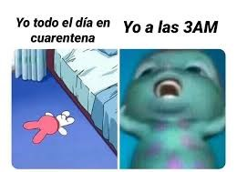

| Nombre | Meme Favorito |
|---|---|
| Carla Cristina Aguilar Aceves |  |
| Santiago Alcérreca De la Viña | |
| Aldo Turégano Montes |
La solución que encontramos a la problemática estipulada en las entregas 1 y 2 es inculcar los valores de tolerancia, diversidad e inclusión por medio de un videojuego usando distintos personajes animados llamados "Pelifrutis". Con esta solución, buscamos tener un alto alcance a los niños mexicanos de entre 4 y 8 años, y confiamos en tener el apoyo y confianza de los padres de familia.
OBJETIVOS: Estimular el trabajo en equipo, reconocimiento y aceptación de las diferencias, tolerancia a la frustración, igualdad y deconstrucción de estereotipos a través de las historias de los juegos y los personajes.
| Escenario | Descripción Detallada |
|---|---|
| Jugar | Al abrir la aplicación, el usuario decide crear una nueva "partida" para poder empezar a disfrutar del juego. Los personajes son presentados, y llega el momento de escoger el tuyo de un repertorio de seis Pelifrutis únicos.
Ahora, se escucha música leve pero alegre, y comienzan dinámicas entretenidas, cortas y simples, que ayudan al usuario a comprender un poco más acerca de la importancia de la inclusión y la no discriminación. |
| Jugar con amigos (multijugador) | Al igual que jugar solo, el usuario también tndrá la posibilidad de jugar de forma colaborativa o "en campaña" con otros usuarios de la aplicación siempre y cuando sean antes usuarios aprobados. Los puntos ganados en la partida se distribuirán entre los jugadores de acuerdo a su aporte en el mismo. |
| Ver rankings | Una vez terminado el juego (ya sea en modo solitario o en campaña), el usuario podrá ver los puntos que ha acumulado en cada uno de los juegos así como compararlos contra los de otros usuarios que él ya haya aprobado. |
| Reanudar partida | Si el usuario se encuentra jugando una partida en solitario y surge la necesidad del usuario de pausar el juego por cualquier razón, esto se podrá hacer indefinidamente y la interfaz le permitirá al usuario reanudarla cuando así lo desee el jugador. |
| Inicio de sesión | Al abrir la aplicación y una vez que ya se haya generado el usuario o hecho el registro. El jugador podrá entrar a su sesión proporcionando el correo electrónico utilizado y su contraseña. Una vez iniciada la sesión se le dirigirá al usuario al menú principal. |
| Registro | Al abrir la aplicación, la primera acción que se deberá hacer es registrarse. Para esto se deberá de proporcionar como mínimo nombre, correo electrónico y una contraseña. Después de ejecutar esta acción exitosamente el usuario podrá
ahora iniciar su sesión.
El objetivo de este escenario es poder tener la información necesaria para garantizar una interacción entre usuarios dentro del juego. |
| Perfil | Dentro de la aplicación, el usuario podrá entrar a ver los detalles de su perfil y así mismo podrá editar cierta información degún sea el caso. Los datos que se podrán actualzar son el nombre del usuario y/o su contraseña. |
| Tips / Hints | Antes de empezar una partida (juego) o durante juegos, la aplicación desplegará ciertos tips o hints relazinados a los valores ya definidos que deseamos inculcar a los usuarios por medio de la aplicación. Esto con el objetivo de poder transmitir mejor el mensaje. |